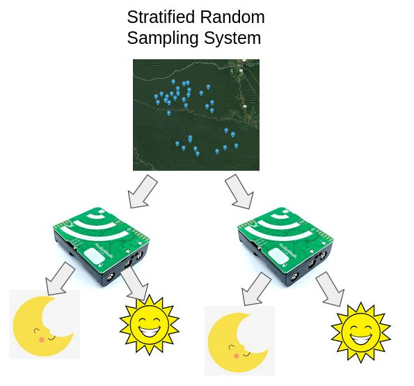

A 4,300 GB corpus of Peruvian Amazon acoustic recordings, reduced to a 34.3 GB representative sample for downstream CNN training — without losing coverage of the species the project exists to detect.
Context
Engineers for Exploration deploys IoT recorders across remote regions of the Peruvian Amazon to monitor biodiversity through sound. The recorders run continuously, producing audio at a rate that quickly outpaces both storage budgets and any reasonable training pipeline. Naive subsampling — say, keeping every nth minute — risks throwing away exactly the rare-species calls the project exists to detect.
What I built
I used Pandas to run stratified random sampling over the recording corpus, reducing it from ~4,300 GB to ~34.3 GB while preserving representativeness across the dimensions the downstream models care about. A big chunk of the work was the unglamorous data-hygiene step — reconciling timestamp drift, duplicate uploads, and partial files — before any sampling could be trusted.
Separately, I applied data augmentation (background-noise injection, pitch shifts) to the sampled corpus to improve the generalization of the CNN ensembles tracking species presence.

Why this matters
Biodiversity monitoring at this scale lives or dies by the long tail. Most recordings are silence, wind, or common species; the analytically interesting signal is in calls that appear in a fraction of a percent of the audio. Any sampling strategy that doesn't actively defend the tail will quietly delete the science you're trying to do. Stratification is the simplest defense, and it works well enough that it freed downstream training to run on a laptop instead of a workstation.
Done as part of UC San Diego's Engineers for Exploration program.